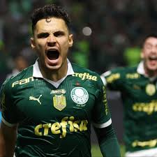

Palmeiras vence Santos no Allianz Parque!
O Palmeiras venceu o Santos por 2 a 0 neste domingo, no Allianz Parque, em jogo válido pelo Campeonato Brasileiro. O destaque da partida foi Vitor Roque, autor dos dois gols que garantiram o triunfo alviverde. O atacante abriu o placar ainda no primeiro tempo, após boa jogada de Endrick, e ampliou na etapa final com um belo chute de fora da área. O Santos tentou reagir, mas parou na forte defesa do Palmeiras. Com o resultado, o Verdão segue firme na parte de cima da tabela, enquanto o Peixe busca se recuperar na competição.